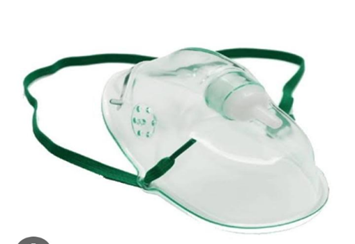
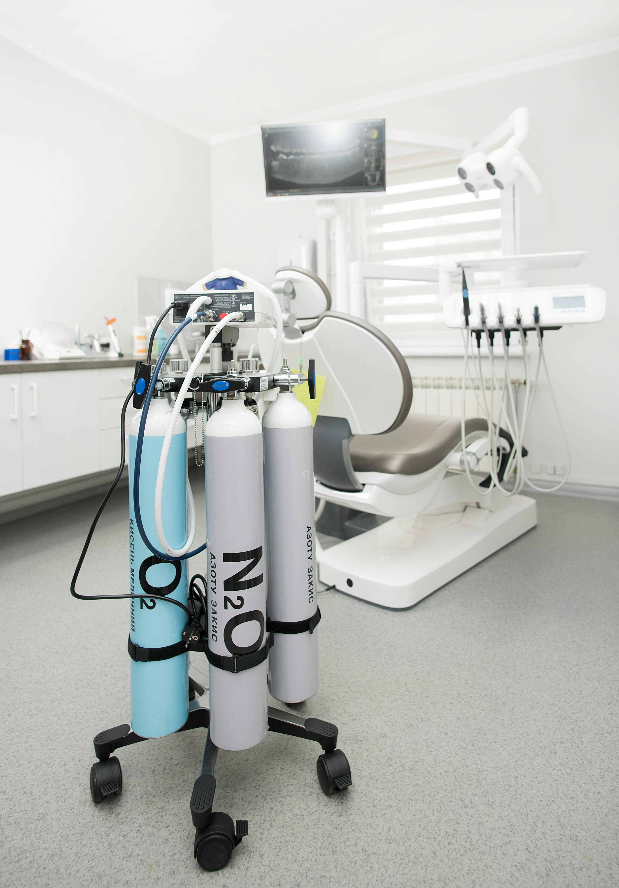
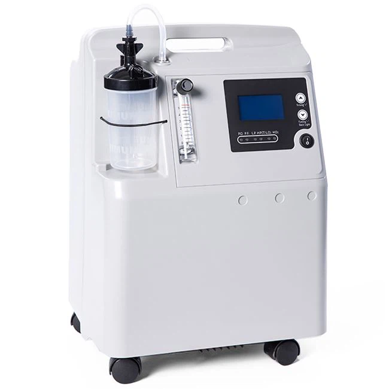

Health Insights
The Importance of Oxygen
Medical Oxygen is an essential drug used in the treatment of hypoxemia, pneumonia, COVID-19, and emergency care.
Proper oxygen levels ensure that your organs function efficiently and reduce fatigue.
Important: Oxygen must always be prescribed by a medical professional to avoid serious complications.
low-flow mask

A Simple Face Mask (often called a "low-flow" mask) is a basic medical device used to deliver oxygen to patients who are breathing on their own but need a bit more support than a nasal cannula can support with up to 5-10 L/min (40% to 60% FiO2).
A Simple Face Mask (often called a "low-flow" mask) is a basic medical device used to deliver oxygen to patients who are breathing on their own but need a bit more support than a nasal cannula can support with up to 5-10 L/min (40% to 60% FiO2).
Oxygen cylinders

Definition and Purpose
Oxygen cylinders are high-pressure containers designed for the storage and transportation of oxygen gas. They are widely used in medical, industrial, and emergency settings to supply oxygen for respiration, combustion, and various technical processes.
Components
Key components of an oxygen cylinder include the cylinder body, valve, pressure regulator, flow meter, and protective cap. The valve controls gas release, while the regulator reduces high pressure to a usable level. The flow meter ensures accurate delivery of oxygen to the user.
Medical Applications:
In healthcare, oxygen cylinders are used to provide supplemental oxygen to patients with respiratory conditions such as asthma, pneumonia, or chronic obstructive pulmonary disease (COPD). They are also essential in emergency care, surgery, and intensive care units.
Safety Precautions
Oxygen supports combustion and can accelerate fires. Cylinders must be stored upright, secured properly, and kept away from heat sources, flammable materials, and oils/grease. Regular inspection for leaks and damage is critical.
Maintenance and Inspection:
Regular maintenance includes checking for leaks, ensuring valves function properly, and verifying pressure levels. Periodic hydrostatic testing is required to confirm the cylinder’s structural integrity.
Oxygen Sources

Oxygen delivery systems include concentrators, cylinders, and hospital pipelines.
Oxygen Concentrator: A device that filters oxygen from ambient air and delivers purified oxygen for medical use.